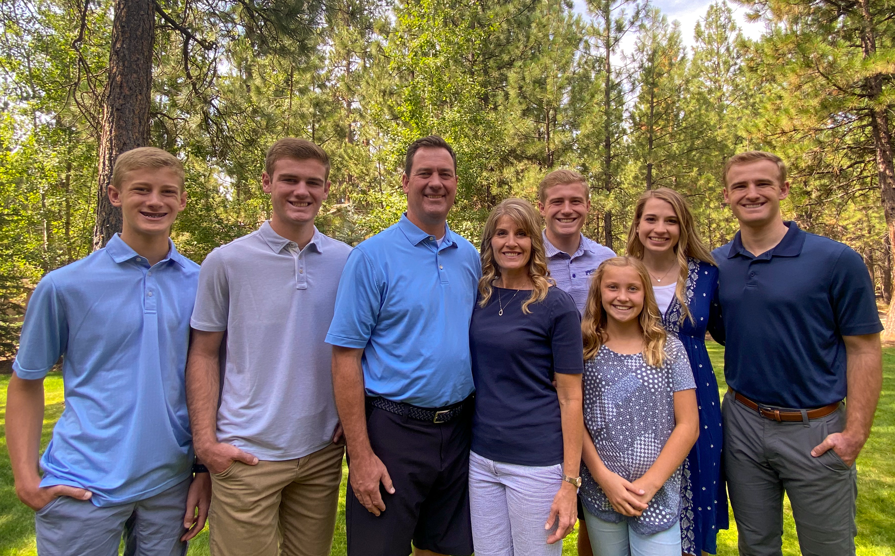

The City of San Jose
I really enjoyed growing up in the heart of Silicon Valley. It was a wonderful experience to be so close to so much innovation from the time I was very little. Because there are so many people with different ethnicities and cultures in San Jose, I quickly grew to understand the importance of learning from diverse perspectives and including everyone to create a rich cultural experience.
A Loving Family
I had the best family growing up! Maybe I'm biased, but I absolutely love my parents and my four siblings. They are the most loving, caring, hard working, competitive people that I know. I attribute the majority of who I am to the loving guidance and teaching of my parents. I also feel like I learned so much from my siblings, even though I'm the oldest.
Pioneer High School
I attended Pioneer High School and did my best to excel in academics, but my real passion was playing basketball. I had the chance to play four years of basketball for Pioneer, with three of those being on the Varsity Team. Playing basketball and leading my team as a captain taught me resilience, teamwork, grit, and leadership.
See some of my other posts: